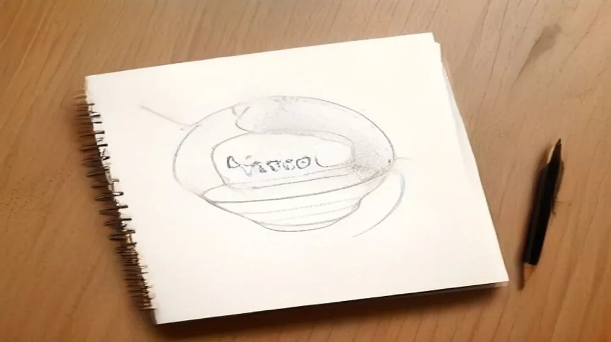

회사, 평범함 속 숨겨진 미스터리! 왜 지금 대한민국이 '회사'에 주목할까?
사진: Vlada Karpovich / Pexels (무료 이미지, 출처 표기)
혹시 '회사'라는 단어에 대해 깊이 생각해 보신 적 있으신가요?

평범하게 들리던 이 단어가 오늘 대한민국 인터넷을 발칵 뒤집어 놓았습니다. 마치 '미스터리 서클'처럼 갑자기 사람들의 입에 오르내리며 검색어 1위에 랭크된 '회사'. 과연 그 이면에는 어떤 사연이 숨어 있을까요? 단순히 돈을 버는 곳 이상의 의미, 현대인의 삶과 떼려야 뗄 수 없는 이 거대한 시스템의 진짜 얼굴을 지금부터 파헤쳐 봅니다!
'회사', 검색어 1위에 오른 미스터리: 단순한 직장이 아니다?
여러분은 '회사' 하면 무엇이 떠오르시나요? 출근, 야근, 보고서, 회식… 어쩌면 지루하고 고단한 일상의 연속일지도 모릅니다. 하지만 최근 '회사'라는 키워드가 급상승한 배경에는 단순한 개인의 경험을 넘어선 사회 전반의 거대한 변화와 깊은 고민이 담겨 있습니다. 과거에는 생계를 위한 수단이자 사회생활의 본거지 정도로 여겨졌던 회사가, 이제는 우리의 정체성, 행복, 그리고 미래를 결정짓는 핵심 키워드로 재조명되고 있기 때문입니다.
생각해보세요. 우리는 하루의 절반 이상을 회사라는 공간에서, 회사와 관련된 생각으로 보냅니다. 그런데도 우리는 과연 '회사'에 대해 얼마나 알고 있을까요? 어쩌면 가장 가까이 있는 미지의 존재가 바로 '회사'일지도 모릅니다. 이번 검색어 급상승은 우리가 잠시 잊고 있었던, 혹은 외면하고 싶었던 '회사'에 대한 근본적인 질문을 다시 던지게 만드는 충격적인 신호탄일지도 모릅니다.
팬데믹이 바꾼 '회사'의 얼굴: 우리는 무엇을 잃고 얻었나?
불과 몇 년 전까지만 해도 상상하기 어려웠던 풍경이 이제는 일상이 되었습니다. 바로 '재택근무'와 '원격근무'의 확산이죠. 코로나19 팬데믹은 우리가 '회사'를 인식하고 경험하는 방식에 혁명적인 변화를 가져왔습니다. 더 이상 회사는 특정 건물의 사무실만을 의미하지 않게 된 것입니다. 집안의 한구석, 카페, 심지어는 해외의 어느 휴양지까지, 우리가 일하는 모든 곳이 회사가 될 수 있다는 놀라운 가능성을 보여주었죠.
하지만 이러한 변화가 마냥 긍정적이기만 했을까요? 어떤 이들은 '퇴근 후의 삶'을 되찾았지만, 또 다른 이들은 '집과 일의 경계'가 모호해지면서 오히려 번아웃에 시달리기도 했습니다. 팀원들과의 비공식적인 교류에서 얻었던 아이디어나 정서적 유대감이 사라지면서 고립감을 느끼는 사례도 늘었습니다. 우리는 팬데믹을 통해 회사의 물리적 공간이 주는 의미와 집단적 소속감의 중요성을 역설적으로 깨달았다고 할 수 있습니다.
워라밸 논쟁부터 번아웃까지: '회사'가 던지는 현대인의 질문
MZ세대의 등장과 함께 '워라밸(Work-Life Balance)'은 단순한 유행어가 아닌, 직장 선택의 중요한 기준으로 자리 잡았습니다. 과거에는 '회사를 위해 나를 희생하는 것'이 미덕으로 여겨지던 시대도 있었지만, 이제는 개인의 삶과 행복이 존중받는 회사가 더욱 매력적인 곳으로 평가받습니다. 최근 '회사' 키워드 급상승은 이러한 사회적 가치관의 변화를 반영하는 것일 수 있습니다.
또한, 과도한 업무와 스트레스로 인한 '번아웃'은 더 이상 개인의 문제가 아닌 사회적 문제입니다. 많은 직장인이 회사의 시스템과 문화 속에서 소진되어가고 있으며, 이는 결국 '회사'라는 존재 자체에 대한 회의감으로 이어지기도 합니다. '과연 이 회사가 나의 인생에서 어떤 의미를 가지는가?', '나는 회사에서 진정으로 행복한가?' – 이러한 질문들이 수많은 직장인의 마음속을 뒤흔들고 있기에 '회사'라는 단어가 더욱 뜨거워지는 것이 아닐까요?
미래의 '회사'는 어떤 모습일까? AI, 원격근무, 그리고 새로운 도전
급변하는 시대 속에서 '회사'는 끊임없이 진화하고 있습니다. 인공지능(AI)은 단순 반복 업무를 대체하며, 인간은 더욱 창의적이고 전략적인 업무에 집중하게 될 것입니다. 로봇 프로세스 자동화(RPA)는 효율성을 극대화하고, 메타버스 기술은 가상 공간에서의 협업을 현실화할지도 모릅니다.
미래의 회사는 단순히 물리적 공간이 아닌, 공통의 목표를 가진 사람들이 모여 시너지를 내는 '유기적인 네트워크'에 가까워질 것입니다. 이러한 변화는 우리에게 새로운 기회를 제공함과 동시에, 끊임없이 배우고 적응해야 하는 도전을 안겨줄 것입니다. '회사'라는 거대한 흐름 속에서 우리는 어떻게 변화에 대처하고, 나아가 주도적인 역할을 할 수 있을지 끊임없이 고민해야 합니다.
나에게 '회사'란 무엇인가? 의미를 찾아가는 여정
'회사'라는 단어가 오늘날 이토록 뜨겁게 회자되는 것은, 결국 우리 모두가 각자의 방식으로 '회사'의 의미를 재정의하려 하기 때문일 것입니다. 어떤 이에게는 꿈을 이루는 도약대가, 또 다른 이에게는 지친 하루를 버티게 하는 현실의 무게로 다가올 수 있습니다. 하지만 분명한 것은, '회사'는 더 이상 주어진 숙명이나 강요된 공간이 아니라는 점입니다.
스스로에게 질문해보세요. '나에게 회사는 어떤 의미인가?', '나는 회사에서 무엇을 얻고 싶은가?', '어떤 회사를 만들고 싶은가?'. 이 질문에 대한 답을 찾아가는 여정이야말로, 급변하는 시대 속에서 당신의 삶과 '회사'의 관계를 재정립하는 가장 중요한 첫걸음이 될 것입니다. 이 글을 통해 당신의 '회사'에 대한 새로운 통찰을 얻으셨기를 바랍니다!
🔗 이 글도 함께 보면 좋아요: 헌법, 대체 왜 난리일까? 실시간 검색어 1위의 놀라운 비밀!
관련 추천 상품
이 포스팅은 쿠팡 파트너스 활동의 일환으로, 이에 따른 일정액의 수수료를 제공받습니다.